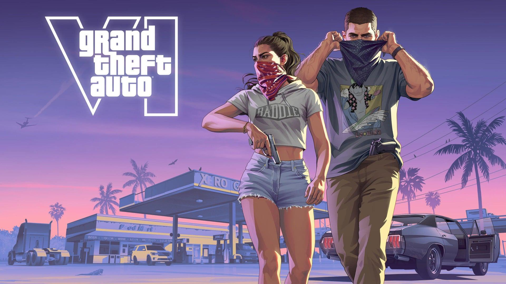

GUIA DE CONQUISTAS
Grand Theft Auto VI

Sobre o jogo
Página de planejamento preliminar. A ordem abaixo é uma estrutura de organização sugerida, não um roteiro confirmado de platina.
Dificuldade: Não confirmada — estimativa preliminar: 4/10 · Tempo estimado: Não confirmado — estimativa preliminar: aproximadamente 200 horas · Troféus: Não oficial — estimativa preliminar fornecida: 55 (1 platina, 2 ouro, 6 prata e 46 bronze) · Jogadores: Não confirmado
Organização dos troféus
Lista de referência: Não oficial — estimativa preliminar fornecida: 55.
Distribuição por categoria ainda não confirmada. Os números informados pelo projeto são apenas uma hipótese de planejamento.
📌 Ordem recomendada
1️⃣ História principal
- Inicie a campanha quando o jogo e sua lista de conquistas estiverem disponíveis.
- Conheça Jason e Lucia e avance pelos capítulos.
- Explore Vice City e as demais regiões de Leonida.
- Complete as missões principais e conclua a história.
2️⃣ Personagens e missões secundárias
- Conheça os personagens secundários.
- Descubra as missões opcionais e atividades de personagens.
- Complete as linhas de missões secundárias que forem confirmadas como requisitos.
- Confira os objetivos relacionados aos personagens.
3️⃣ Exploração de Leonida
- Explore as regiões disponíveis.
- Descubra pontos de interesse e localidades de Vice City.
- Complete os objetivos de exploração que constarem na lista oficial.
- Registre as atividades espalhadas pelo mapa.
4️⃣ Colecionáveis
- Identifique os conjuntos de colecionáveis confirmados.
- Explore os locais relacionados aos itens especiais.
- Acompanhe os conjuntos incompletos.
- Conclua os objetivos de coleção que forem confirmados.
5️⃣ Atividades e desafios
- Complete as atividades opcionais que forem exigidas.
- Confira os desafios de classificação e progressão quando a lista oficial for divulgada.
- Complete as atividades dos personagens secundários.
- Verifique os requisitos de conclusão total.
6️⃣ Conclusão e limpeza final
- Confira os requisitos oficiais para 100% de conclusão.
- Finalize missões, atividades e coleções confirmadas.
- Verifique os troféus pendentes na plataforma escolhida.
- Atualize este roteiro quando os requisitos oficiais estiverem disponíveis.
Avisos sobre objetivos perdíveis
- Os números de dificuldade, duração e quantidade de troféus fornecidos nesta versão são estimativas não oficiais e não devem ser apresentados como dados confirmados.
- A lista de troféus, suas categorias, requisitos, modos de jogo e possíveis objetivos perdíveis precisam ser substituídos por informações oficiais ou verificadas após a divulgação da lista da plataforma.
- Não há confirmação suficiente para afirmar que existam coleções específicas, modo online ou requisitos exatos de 100% nesta etapa.
Esta seção é provisória e deve ser revisada com fontes oficiais.
Colecionáveis e objetivos secundários
- Categorias de colecionáveis ainda não confirmadas.
- Não cadastrar nomes de conjuntos, quantidades ou locais até que existam fontes verificáveis.
← Voltar à biblioteca